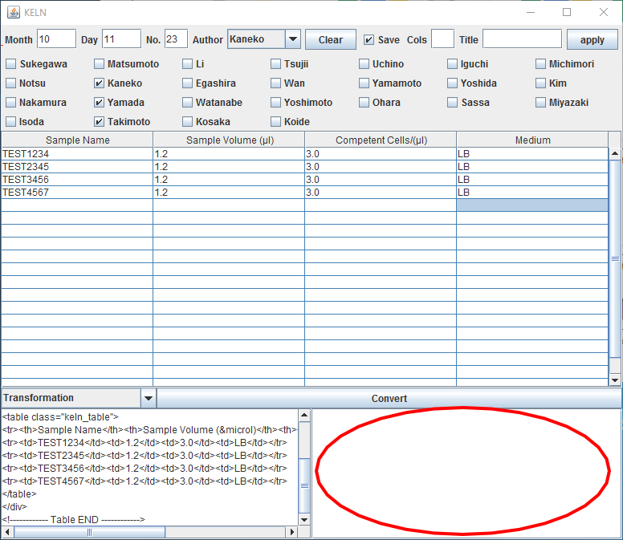
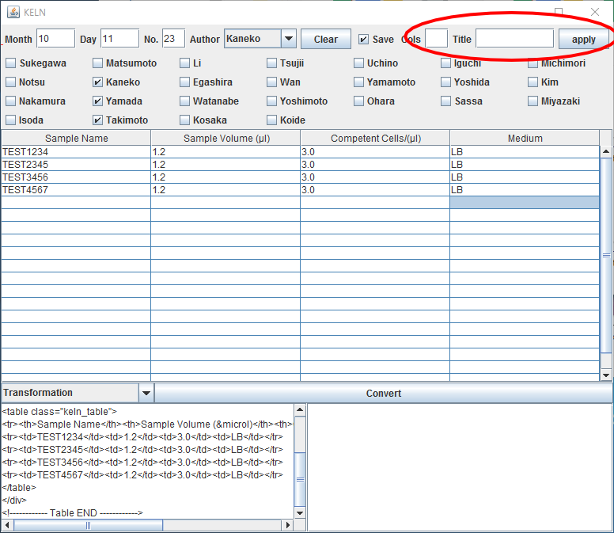

We developed a software named "KELN": Kyoto-team Electronic Lab Note. Have you ever felt it difficult to write tables in html documents? KELN is a solution! KELN provides you user-friendly graphical user interface so that those who don't know html tags can make tables in html documents very easily!
Before we developed this software, it took a long time to write HTML documents such as tables of our lab notes. Because not all of us are good at HTML works, one or two HTML experts in our team did all works. We thought how wonderful it would be if we could assign this work to other members in our team.
KELN improved writing speed dramatically.
You don't have to worry about syntax errors. All files generated by KELN are formatted in the same way, including class tags for custormizing their appearance.
You can add descriptions of the table here
You can also make custom tables. Please enter the numbers of colmns and table titel here, then push "apply" button.
Note: first row of the table will be titles of columns.
You can customize the checkboxes of teammates in KELN by editing settings.txt.
note: Please write names separated by comma. If KELN says "Syntax error", please confirm that settings.txt is correct.
Because KELN is a open source, everyone can modify this software. Please add functions you need, and start writing electronic lab notes today!
KELN is now available on https://github.com/iGEMKyoto/KELN/releases.